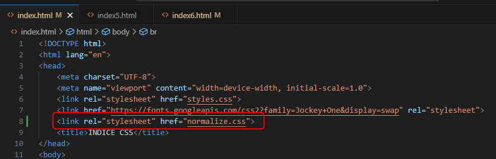
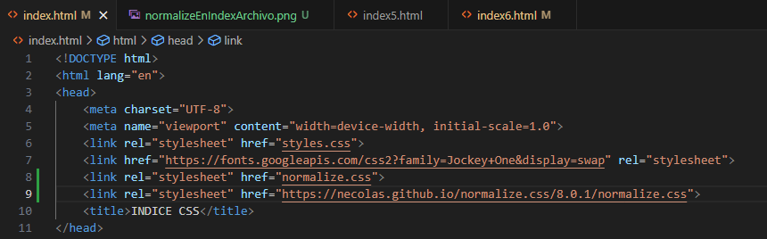
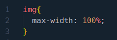
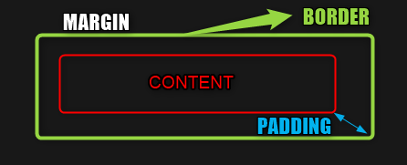

Normalize es un archivo que se puede importar de la misma forma como se importa el archivo CSS.
Y es que lo elementos colocados en la maquetacion es decir el HTML elementos como los parrafos titulos, etc,
tienen de por si ya unos estilos predefinidos, el archivo normalize, lo que hace es eliminar esos estilos por defecto
esto hace mas facil el tratamiento de los estilo cuando modificamos el css, ya que unos tipos de estilos pueden chocar con otros ya
predefinidos
Se puede usar el normalize de varias formas, pero el primer paso es buscar el archivo a traves de la web mediante un navegador
como google
Como lo dijimos anteriormente, puede ser usando npm (que es un gestor de paquetes llamado node pero si estas aprendiendo css esto
viene mas adelante), o descargandolo en el boton
Al dar click al boton nos abre el archivo, el cual podemos copiar y guardar en bloc de notas, pero cambiandole la extension a .css
para luego importarlo mediante un link en el html y añadirlo a las carpetas del proyecto
Y se añade mediante el link en el archivo HTML en la posicion de los metadatos
lo mismo puede realizarse mediante el mismo link pero apuntando directamente a la direccion web
Esto quiere decir a la direccion que aparece en la barra de busqueda de la web
Y se agrega al link, en los metadatos del HTML
Estas dos imagenes fueron generadas con pladecode .io
Se acostumbra modificar en el normalize el css poniendo en el selector img la propiedad max widht-100%
hara que la relacion de aspecto de las imagenes se mantengan y no se distorsionen
Y tambien esta el box sizing border box, para esto se debe comprender un poco
Dentro del modelo de caja lo primero que debemos entender son los conceptos de margin, border, padding y content
Es el contenido principal del elemento (texto, imágenes, etc.), y es lo que ves dentro de la caja.
Es el espacio interno entre el contenido y el borde del elemento. Aumenta el área alrededor del contenido, pero está dentro del borde.
Es el borde alrededor del padding. Puede tener grosor, color y estilo, y se encuentra entre el padding y el margen.
Es el espacio externo entre el borde del elemento y los otros elementos. Se utiliza para separar elementos entre sí.
Ahora bien con el box sizing border box logramos que al dar propiedades como height y widht el ancho y alto total del elemento sea el especificado
por ejemplo 20 pixeles, si no usaramos max widht 100%, al ancho (widht) y alto (height) del elemento, entonces, el ancho total del elemento
se terminaria sumando el ancho de los padding border y margin lo que haria que el elemento midiera mas de 20 px
Ademas el padding y el margin en este caso se acostumbran poner en 0 con el selector universal (*)